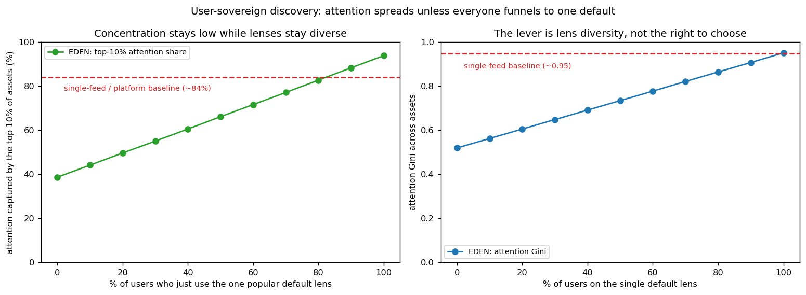

In plain language
Companion to RESULTS - Discovery & Attention. Companion added July 11, 2026 — the v1–v5-era runs predate the plain-language convention; written from the committed RESULTS as it stands today (including any verification-pass corrections already applied in that file), with no reinterpretation.
The question
ADAM introduces the one genuinely new risk in EDEN: whoever shapes what surfaces shapes who gets seen — and since EDEN pays on use, who gets paid. The design's answer is that there is no central ranker to capture: every search starts from a raw state the user chooses, and any ranking "lens" a user adopts is itself a swappable, EVE-earning asset. So the real question becomes: with user-sovereign discovery and a market of lenses, how concentrated does attention actually get — and where does the residual risk live?
What we found
Diversity is the whole game. With fully diverse lenses, the top 10% of assets capture ~39% of attention (Gini 0.52) — the long tail gets seen — versus ~84–94% under a single global feed like today's platforms. But concentration climbs smoothly as people pile onto one popular default lens: 50% captured when 20% of users are on it, 72% at 60%, and by 80–100% adoption EDEN has reproduced today's feed (83–94%, Gini 0.87–0.95). So the lever is diversity in actual use, not the mere right to choose. Three design forces defend it: lenses are EVE-earning assets, so there's a standing market incentive to build better and more niche ones; every lens must disclose how it ranks, so a biased default is detectable; and there's no lock-in, so a dominant lens holds users only as long as it serves them. Even the worst case only matches a platform feed — and stays contestable rather than captive, where a platform's algorithm is concentration with no exit.
The honest catch
The residual risk is default-stickiness: most people never change defaults, and if everyone drifts onto one popular template, discovery quietly collapses back toward a single feed. And this is a stylized model — the contestability dynamic (biased lenses losing users) is argued rather than fully simulated, and it doesn't model adversarial self-dealing lenses or the network effects that make defaults sticky. The robust takeaway is the shape of the curve, not the exact numbers.
One line
Nobody in EDEN is handed a feed, and as long as many different discovery lenses are genuinely in use, attention spreads far wider than under a single algorithm — but the protection is diversity people actually exercise, not the right to choose, so the design must keep investing in varied defaults and frictionless switching.
Words used here (added July 18, 2026 — plain-language house rule; the text above is unchanged). ADAM — EDEN's AI layer: the personal agent that searches, ranks, and fetches for each user individually — doing what a platform's feed algorithm does for everyone at once. Gini — a 0-to-1 lopsidedness score: 0 means attention spread perfectly evenly, 1 means one asset takes it all; 0.52 is a broad spread, 0.87–0.95 is winner-take-all territory. Long tail — the huge crowd of niche items that each draw a little attention; "the long tail gets seen" means small creators still surface. Contestable — always open to challenge: a dominant lens can be displaced the moment it stops serving users, where a platform's algorithm cannot. Network effects — things get more valuable, and stickier, the more people already use them — the force that makes defaults snowball. Stylized — deliberately simplified to the parts that matter for this question; trust the shape of the curve, not the exact digits.
Figures

Technical results
Models the one genuinely new risk ADAM introduces — whoever shapes what surfaces shapes who gets seen, and (since EDEN pays on use) who gets paid. Built around the design's actual answer: discovery is user-sovereign. Files in this folder.
The framing (which is the whole point)
In EDEN there is no imposed global feed. Every search starts from a raw state the user chooses, and any third-party ranking template a user adopts to make ADAM behave how they like is itself an EVE-earning asset they freely pick and can swap — one point on a spectrum that runs from a light parameter-template up to a fully custom ADAM. The user always holds the controls. So the question isn't "can a central ranker capture attention?" — there is no central ranker. The question is: given user-sovereign discovery plus a competitive market of swappable lenses, how concentrated does attention actually get, and where is the residual risk?
The result
We measured how concentrated attention across assets becomes as a function of how many users just use the single most popular default lens (g) instead of their own/diverse lens — with a single global engagement-feed (today's platform dynamic) as the reference.
| Users on the one default lens | Top-10% of assets capture | Attention Gini |
|---|---|---|
| 0% (full diversity) | 39% | 0.52 |
| 20% | 50% | 0.61 |
| 40% | 61% | 0.69 |
| 60% | 72% | 0.78 |
| 80% | 83% | 0.87 |
| 100% (everyone on one lens) | 94% | 0.95 |
| single-feed / platform baseline | ~84% | ~0.95 |
Two things stand out, and both match the design's intent:
- User-sovereign, diverse discovery keeps concentration far below a single feed. When lenses are diverse, the top 10% of assets capture ~39% of attention (Gini 0.52) — the long tail gets seen — versus ~84–94% under a single global feed. The structural reason: diverse users surface assets that fit their varied interests, so attention spreads across the whole library instead of funneling to a handful of viral winners.
- The lever is diversity, not the right to choose. Concentration climbs smoothly toward the platform baseline as more people default to one popular lens. By
g ≈ 80–100%it has reproduced today's feed. So the right to choose is necessary but not sufficient — what actually protects the ecosystem is that people exercise it, i.e., that many distinct lenses are genuinely in use.
So what protects diversity — and what's the residual risk
The residual risk is default-stickiness: most people don't change defaults (the same reason most never switch browser settings). If everyone drifts onto one popular template, EDEN's discovery quietly collapses back toward a single feed. Three forces in the design push the other way:
- A competitive market of lenses. Because templates/custom ADAMs are EVE-earning assets, there's a standing incentive to build better, niche, and specialized lenses — which fragments attention by serving varied tastes. (Your "anyone can design or promote their own ADAM" instinct is exactly this engine, and it's already what the ADAM Protocol Spec allows.)
- Transparency. Every lens must disclose how it ranks, so a default that becomes biased or self-dealing is detectable — and a detected bias is a reason to switch.
- Contestability / no lock-in. Portability means a popular default holds users only as long as it serves them; the moment a better lens appears, users (and their assets and reputation) can move. Unlike a platform's locked-in algorithm, a dominant EDEN lens sits on an unstable throne.
The crucial contrast: a single platform feed is concentration with no exit — you get the algorithm you're given. EDEN's worst case (everyone-on-one-default) only matches that, and even then it's contestable rather than captive. The design implication is concrete: invest in lens diversity — sensible varied defaults, frictionless switching, surfacing alternatives, and a healthy template market — because diversity, not the mere right to choose, is what keeps discovery fair.
Honest limits
A stylized model: niches and per-user idiosyncrasy stand in for real interest structure; the diverse and default lenses are simplified to a within-niche quality spread vs. a global popularity funnel; and the contestability dynamic (biased lenses losing users) is argued rather than fully simulated. It doesn't model adversarial lenses that try to surface their creators' own assets (a self-dealing attack the transparency rule targets) or the network effects that make defaults sticky. The robust takeaways are the shape — diversity keeps concentration well below a single feed, and default-stickiness is the thing to watch — not the exact numbers. Audience: anyone worried ADAM becomes a new attention gatekeeper.
Files
discovery_sim.py— the user-sovereign discovery model and the default-adoption sweepfig_discovery.png— attention concentration vs. default-lens adoption, against the single-feed baselineresults_discovery.json— all figures
Raw data